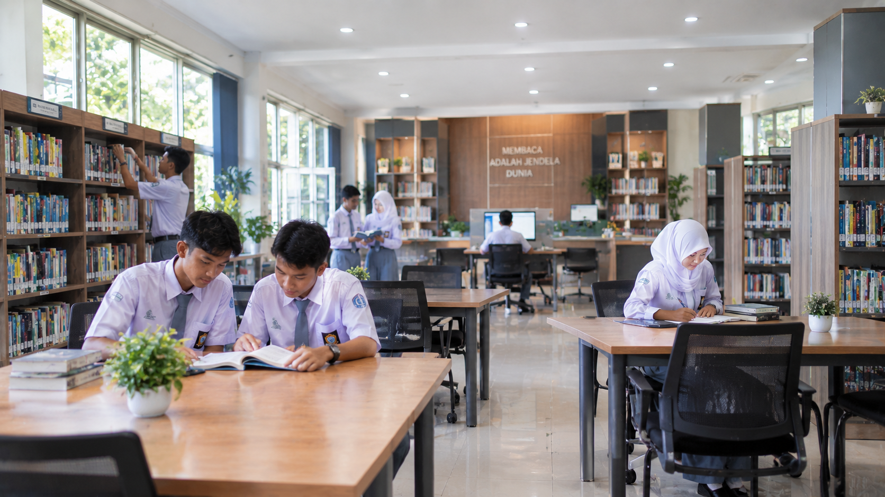

Fasilitas Sekolah
Didukung fasilitas modern untuk menunjang proses belajar mengajar

Lab Komputer
6 Lab dengan 600+ PC spesifikasi tinggi

Perpustakaan
Koleksi 5000+ buku dan akses e-library

Workshop
Ruang praktik industri dengan peralatan modern

Lapangan Olahraga
Fasilitas olahraga lengkap untuk pengembangan bakat